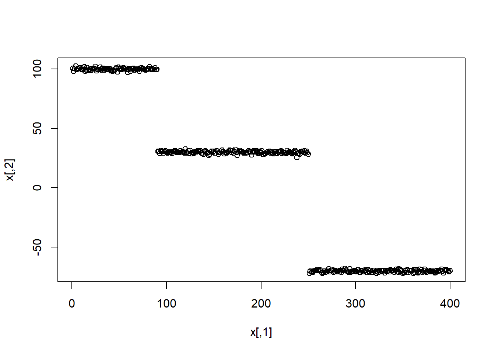

Générer la fonction par Simulation de trois(3) normales multivariées.
generfunction=function(moy,moy1,moy2,sd,sd1,sd2){
library(mvtnorm)
x1=rmvnorm(90,moy,sd)
x2=rmvnorm(160,moy1,sd1)
x3=rmvnorm(150,moy2,sd2)
x=rbind(x1,x2,x3)
x=cbind(c(1:400),x)
return(x)
}Classification
classifKmeans=function(x,k){
library(stats)
classes=kmeans(x[,-1],k)
classif=cbind.data.frame(x,as.factor(classes$cluster))
return(classif)
}Tirer un échantillon des données initiales
echantillon_indice=function(x,nbre){
ech=sample(x[,1],nbre,replace = FALSE)
return(ech)
}
echantillon=function(x,ech){
donnee_tiree=x[which(x[,1]%in%ech),]
return(donnee_tiree)
}Comparer les deux partitions
compar_partition=function(x,k,nbre_echantillon,col_index,col_partition){
classification1=classifKmeans(x,k)
indice=echantillon_indice(x,nbre_echantillon)
echantillon_0=echantillon(x,indice)
classification2=classifKmeans(echantillon_0,k)
donnee=cbind(x,classification1[,col_partition])
ajuste=donnee[which(donnee[,col_index]%in%indice),]
indice_rente=adjustedRandIndex(ajuste[,col_partition],classification2[,col_partition])
return(indice_rente)
}Répéter le processus n fois et comparer les différentes partitions
Repeter=function(comparaison_partition,n){
comparer=vector("numeric",n)
for(i in 1:n){comparer[i]=compar_partition(data,3,120,1,6)}
return(comparer)
}Application des fonctions
x=generfunction(c(100,10),c(30,1),c(-70,81),diag(c(1,1), ncol=2),diag(c(1,1) ,ncol=2),diag(c(1,1),ncol = 2))
plot(x)
Exemple avec la base Iris
data(iris)
plot(iris)
data=cbind(c(1:150),iris)
data=data[,-6]
compar1=compar_partition(data,3,120,1,6)
indice1=Repeter(compar1,100)
indice1## [1] 0.7189199 0.4404580 0.8841643 0.9758226 0.9745782 1.0000000 0.4388384
## [8] 1.0000000 0.4388110 0.9762035 0.9754580 1.0000000 1.0000000 0.9757235
## [15] 0.4314000 0.9379959 0.4641062 1.0000000 0.9752026 0.4319205 1.0000000
## [22] 0.4391070 0.9758226 0.9757869 1.0000000 0.4565408 1.0000000 0.4380582
## [29] 0.9746611 0.4332753 1.0000000 0.9755474 1.0000000 0.9756316 1.0000000
## [36] 0.9754580 0.4388849 1.0000000 1.0000000 0.4540384 1.0000000 1.0000000
## [43] 0.4223629 0.9754716 0.9762035 0.9764370 0.4519167 0.9509438 1.0000000
## [50] 0.4430097 1.0000000 0.4539347 0.9746119 1.0000000 1.0000000 0.9488875
## [57] 0.9751182 0.4537402 0.9753611 1.0000000 0.4196030 1.0000000 0.9749204
## [64] 1.0000000 0.4380502 0.4342639 0.4616012 0.9757021 0.9748514 0.9751010
## [71] 0.4319205 0.9739477 1.0000000 1.0000000 1.0000000 1.0000000 0.6390238
## [78] 1.0000000 0.4364906 1.0000000 0.5976629 0.9525424 0.9766641 0.4383885
## [85] 1.0000000 1.0000000 0.9479867 1.0000000 1.0000000 1.0000000 1.0000000
## [92] 1.0000000 1.0000000 0.9876015 0.6283591 1.0000000 0.9748379 0.4405945
## [99] 0.4485310 0.9744127mean(indice1)## [1] 0.8303347